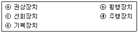

타워크레인운전기능사 (2016-07-10 기출문제)
1과목: 타워크레인 구조 및 기능일반
1. 타워크레인의 기초 및 상승방법에 대한 설명으로 옳은 것은?
- 지반에 콘크리트 블록으로 고정시켜 설치하는 방법을 “고정형”이라 하며, 초고층 건물에 주로 사용한다.
- 건물외부에 브라켓을 달아서 타워크레인을 상승하는 방법을 “매달기식 타워기초”라 한다.
- 타워크레인의 기초는 지내력과 관계없이 반드시 파일을 시공해야 한다.
- 고층건물 자체의 구조물에 지지하여 상승하는 방법을 “상승식” 이라 한다.
(정답률: 67%)

2. T형 타워크레인의 메인지브를 이동하며 권상작업을 위한 선회반경을 결정하는 횡행장치는?
- 트롤리
- 훅 블록
- 타이 바
- 캣 헤드
(정답률: 76%)
3. 우리나라(한국)에서 사용되고 있는 전력계통의 상용주파수는?
- 50 Hz
- 60 Hz
- 70 Hz
- 80 Hz
(정답률: 83%)
4. 기초 앵커를 설치하는 방법 중 옳지 않은 것은?
- 지내력은 접지압 이상 확보한다.
- 앵커 세팅의 수평도는 ±5mm 로 한다.
- 콘크리트 타설 또는 지반을 다짐한다.
- 구조 계산 후 충분한 수의 파일을 항타한다.
(정답률: 74%)
5. 타워크레인의 주요구조부가 아닌 것은?
- 지브 및 타워 등의 구조부분
- 와이어로프
- 주요방호장치
- 레일의 정지 기구
(정답률: 57%)
6. 타워크레인에서 권과방지장치를 설치해야 되는 작업장치만 고른 것은?

- ⓐ, ⓒ
- ⓐ, ⓔ
- ⓐ, ⓓ
- ⓑ, ⓒ, ⓔ
(정답률: 62%)
7. 유압펌프에서 캐비테이션(공동현상) 방지법이 아닌 것은?
- 흡입구의 양정을 낮게 한다.
- 오일탱크의 오일점도를 적당히 유지한다.
- 펌프의 운전속도를 규정 속도 이상으로 한다.
- 흡입관의 굵기는 유압펌프 본체 연결구의 크기와 같은 것을 사용한다.
(정답률: 78%)
8. 유압장치에 관한 설명으로 틀린 것은?
- 유압펌프는 기계적인 에너지를 유체 에너지로 바꿔준다.
- 가압되는 유체는 저항이 최소인 곳으로 흐른다.
- 유압력은 저항이 있는 곳에서 생성된다.
- 고장원인의 발견이 쉽고 구조가 간단하다.
(정답률: 64%)
9. 타워크레인의 과부하방지장치는 정격하중의 얼마이상 권상 시 동작하여야 하는가?
- 정격하중의 1배
- 정격하중의 1.⑤배
- 정격하중의 1.25배
- 정격하중의 1.5배
(정답률: 67%)
10. 타워크레인에서 상ㆍ하 두 부분으로 구성되어 있으며, 그 사이에 회전 테이블이 위치하는 작업장치는?
- 권상장치
- 횡행장치
- 선회장치
- 주행장치
(정답률: 77%)
11. 유압장치에서 제어밸브의 3대 요소로 틀린 것은?
- 유압 제어 밸브-오일 종류 확인(일의 선택)
- 방향 제어 밸브-오일 흐름 바꿈(일의 방향)
- 압력 제어 밸브-오일 압력 제어(일의 크기)
- 유량 제어 밸브-오일 유량 조정(일의 속도)
(정답률: 78%)
12. 타워크레인 방호장치와 연관성의 연결이 틀린 것은?
- 과부하 방지장치-인양하물
- 권과 방지장치-와이어로프
- 충돌 방지장치-주행, 선회
- 해지장치-충돌방지
(정답률: 65%)
13. 옥외에 타워크레인을 설치 시 항공등(燈)의 설치는 지상 높이가 최소 몇 미터 이상일 때 설치하여야 하는가?
- 40m
- 50m
- 60m
- 70m
(정답률: 62%)
14. 타워크레인의 기초에 작용하는 힘에 대환 설명으로 틀린 것은?
- 작업 시 선회에 대한 슬루잉 모멘트가 기초에 전달된다.
- 타워크레인의 자중과 양증하중은 수직력으로 기초에 전달된다.
- 카운터 지브와 메인지브의 모멘트차이에 의한 전도모멘트가 기초에 전달된다.
- 풍속에 의해 타워크레인의 기초는 영향을 받지 않고 양중작업에만 유의해야 한다.
(정답률: 80%)
15. 전동기 외함, 제어반의 프레임 접지저항에 대한 설명으로 옳은 것은?
- 200V에서는 50Ω일 것
- 400V 초과 시는 50Ω일 것
- 400V 이하 일 때 100Ω 이하 일 것
- 방폭지역의 외함은 전압에 관계없이 100Ω이하 일 것
(정답률: 58%)
16. 선회 브레이크 풀림장치 작동에 대한 설명으로 틀린 것은?
- 크레인 본체가 바람의 영향을 최소로 받도록 한다.
- 크레인 가동 시 선회 브레이크 풀림장치를 작동시킨다.
- 크레인 비가동 시 지브가 바람 방향에 따라 자유롭게 선회하도록 한다.
- 태풍 시 등에 크레인 본체를 보호하고자 설치된 장치이다.
(정답률: 59%)
17. 타워크레인을 자립고(Ferr Standing)보다 높게 설치할 경우 필요한 마스트의 고정 및 지지방식으로 옳은 것은?
- 벽체 지지방법
- H-빔 지지방법
- 브라켓 지지방법
- 콘크리트 블록 지지방법
(정답률: 50%)
18. 타워크레인의 제어반에 설치된 과전류 보호용 차단기의 찻잔용량은 해당 전동기의 정격전류의 몇 % 이하 이어야 하는가?
- 100% 이하
- 250% 이하
- 300% 이하
- 350% 이하
(정답률: 64%)
19. 다음 중 유압 실린더의 종류로 틀린 것은?
- 단동 실린더
- 복동 실린더
- 다단 실린더
- 회전 실린더
(정답률: 65%)
20. 타워크레인의 콘크리트 기초앵커 설치 시 고려해야 할 사항으로 가장 거리가 먼 것은?
- 콘크리트 기초행커 설치시의 지내력
- 콘크리트 블록의 크기
- 콘크리트 블록의 형상
- 콘크리트 블록의 강도
(정답률: 58%)
2과목: 양중작업 일반
21. T형 타워크레인의 트롤리 이동작업 중 갑자기 장애물을 발견했을 때 운전자의 대처 방법으로 가장 적절한 것은?
- 비상정지스위치를 누른다.
- 경보기를 작동시킨다.
- 분전반스위치를 끈다.
- 재빨리 선회시킨다.
(정답률: 74%)
22. 타워크레인을 사용하여 아파트나 빌딩의 거푸집폼 해체 시 안전작업 방법으로 가장 적절한 것은?
- 작업안전을 위해 이동식크레인과 동시작업을 시행한다.
- 타워크레인의 훅을 거푸집 폼에 걸고, 천천히 끌어당겨서 양중한다.
- 거푸집 폼을 체인블록 등으로 외벽과 분리한 후에 타워크레인으로 양중한다.
- 타워크레인으로 거푸집 폼을 고정하고, 이동식크레인으로 당겨 외벽에서 분리한다.
(정답률: 59%)
23. 타워크레인 작업 전 조종사가 점검해야 할 사항이 아닌 것은?
- 마스트의 직진도 및 기초의 수평도
- 타워크레인의 작업반경별 정격하중
- 와이어로프의 설치상태와 손상유무
- 브레이크의 작동상태
(정답률: 64%)
24. 와이어로프 꼬임 중 보통꼬임의 장점이 아닌 것은?
- 휨성이 좋으며 벤딩 경사가 크다.
- Kink(킹크)가 잘 일어나지 않는다.
- 꼬임이 강하기 때문에 모양 변형이 적다.
- 국부적 마모가 심하지 않아 마모가 큰 곳에 사용 가능하다.
(정답률: 61%)
25. 와이어로프의 클립(Clip)체결 방법으로 올바르지 않은 것은?
- 가능한 심블(Thimble)을 부착하여야 한다.
- 클립의 새들은 로프의 힘이 걸리는 쪽에 있어야 한다.
- 하중을 걸기 전에 단단하게 조여 주고 그 이후에는 조임이 필요없다.
- 클립 수량과 간격은 로프 직경의 6배 이상, 수량은 최소 4개 이상이어야 한다.
(정답률: 72%)
26. 육성 신호에 대한 설명으로 옳지 않은 것은?
- 육성메시지는 간결, 단순, 명확하여야 한다.
- 긴 물체, 중량물 등의 작업에서는 육성신호를 사용해야 한다.
- 소음이 심한 작업 지역에서는 육성보다는 무선 통신을 권장한다.
- 신호를 접수한 운전자와 통신한 사함은 서로 완전하게 이해하였는지를 확인하여야 한다.
(정답률: 75%)
27. 타워크레인 작업 시 수신호 기준서를 제공 받을 필요가 없는 사람은?
- 조종사
- 정비기사
- 신호수
- 인양작업 수행원
(정답률: 77%)
28. 타워크레인 인양작업 시 줄걸이 안전사항으로 적합하지 않은 것은?
- 신호수는 원칙적으로 1인이다.
- 신호수는 타워크레인 조종사가 잘 확인할 수 있도록 정확한 위치에서 행한다.
- 2인 이상이 고리 걸이 작업할 때는 상호간에 복창소리를 주고 받으며 진행한다.
- 인양 작업시 지면에 있는 보조자는 와이어로프를 손으로 꼭 잡아 하물이 흔들리지 않게 하여야 한다.
(정답률: 74%)
29. 신호자가 한손을 들어 올려 주먹을 쥔 상태는 무슨 신호를 나타내는 것인가?
- 작업종료
- 운전정지
- 비상정지
- 운전자 호출
(정답률: 73%)
30. 타워크레인 운전자의 의무사항으로 볼 수 없는 것은?
- 재해방지를 위해 사용 전 장비 점검
- 기어박스의 오일량 및 마모기어의 정비
- 장비에 특이사항이 있을 시 교대자에게 설명
- 안전운전에 영향을 미칠 결함 발견 시 작업 중지
(정답률: 75%)
31. 양손을 들어 올려 크게 2~3회 좌우로 흔드는 수신호는?
- 고속으로 주행
- 고속으로 권상
- 비상 정지
- 운전자 호출
(정답률: 62%)
32. 취급이 용이하고 킹크발생이 적어 기계, 건설, 선박에 많이 사용되는 로프의 꼬임 모양은?
- 랭S 꼬임
- 보통 꼬임
- 특수꼬임
- 랭Z 꼬임
(정답률: 61%)
33. 줄걸이 용구의 안전계수를 나타낸 공식은?
- 안전계수=절단하중÷안전하중
- 안전계수=허용응력÷극한강도
- 안전계수=극한강도÷절단하중
- 안전계수=허용하중÷절단하중
(정답률: 67%)
34. 와이어로프에서 소선을 꼬아 합친 것은?
- 심강
- 트래드
- 공심
- 스트랜드
(정답률: 64%)
35. 크레인으로 중량물을 인양하기 위한 줄걸이 작업을 할 때 주의사항으로 틀린 것은?
- 중량물의 중심위치를 고려한다.
- 줄걸이 각도를 최대한 크게 해준다.
- 줄걸이 와이어로프가 미끄러지지 않도록 한다.
- 날카로운 모서리가 있는 중량물은 보호대를 사용한다.
(정답률: 79%)
36. 와이어로프의 교체 대상으로 옳지 않은 것은?
- 한 꼬임의 소선수가 10% 이상 단선 된 것
- 공칭 직경이 5% 감소 된 것
- 킹크 된 것
- 현저하게 변형되거나 부식 된 것
(정답률: 68%)
37. 줄걸이 용구에 해당하지 않는 것은?
- 슬링 와이어로프
- 섬유 벨트
- 받침대
- 샤클
(정답률: 67%)
38. 와이어로프에서 심강의 종류가 아닌 것은?
- 섬유심
- 강심
- 와이어심
- 편심
(정답률: 60%)
39. 3ton의 부하물을 4줄걸이로 하여 조각도 60°로 매달았을 경우 1줄에 걸리는 하중은 약 얼마인가?
- 0.566ton
- 0.666ton
- 0.766ton
- 0.866ton
(정답률: 45%)
40. 줄걸이용 와이어로프에 장력이 걸린 후, 일단 정지하고 줄걸이 상태를 점검할 때의 확인사항이 아닌 것은?
- 줄걸이용 와이어로프에 장력이 균등하게 작용하는지 확인한다.
- 줄걸이용 와이어로프의 안전율은 4이상 되는지 확인한다.
- 화물이 붕괴 또는 추락할 우려는 없는지 확인한다.
- 줄걸이용 와이어로프가 이탈할 우려는 없는지 확인한다.
(정답률: 73%)
3과목: 타워크레인 설치.해체 일반
41. 타워크레인 해체 작업 시 준수사항으로 틀린 것은?
- 비상정지장치는 비상사태에 사용한다.
- 지브의 균형은 해체 작업과는 연관성이 없다.
- 마스트를 내릴 때는 지상 작업자를 대피 시킨다.
- 순간풍속 10m/sec를 초과할 때에는 즉시 작업을 중지한다.
(정답률: 69%)
42. 텔레스코핑 요크의 핀 또는 홀의 변형을 목격하였을 시 조치사항으로 틀린 것은?
- 핀이 다소 휘였으면 분해 및 교정 후 재사용한다.
- 홀이 변형된 마스트는 해체, 재사용하지 않는다.
- 휘거나 변형된 핀은 파기하여 재사용하지 않는다.
- 핀은 반드시 제작사에서 공급된 것으로 사용한다.
(정답률: 77%)
43. 타워크레인 지브에서 이동요령 중 안전에 어긋나는 것은?
- 2인 1조로 이동
- 지브 내부의 보도 이용
- 트롤리의 점검대를 이용한 이동
- 안전로프에 안전대를 사용하여 이동
(정답률: 63%)
44. 타워크레인의 설치작업 중 추락 및 낙하 위험에 따른 대책에 해당하지 않는 것은?(오류 신고가 접수된 문제입니다. 반드시 정답과 해설을 확인하시기 바랍니다.)
- 설치작업 시 상하이동 중 추락방지를 위해 전용 안전벨트를 사용한다.
- 텔레스코핑 케이지의 상ㆍ하부 발판을 이용하여 발판에서 작업을 한다.
- 기초 앵커 볼트 조립 시에는 반드시 안전벨트를 착용한 후 작업에 임한다.
- 텔레스코핑 케이지를 마스트의 각 부재 등에 심하게 부딪치지 않도록 주의한다.
(정답률: 26%)
45. 타워크레인의 설치작업 전 조종사가 확인해야 되는 설치계획 확인사항으로 틀린 것은?
- 기종 선정 적합성 여부를 확인한다.
- 타워크레인의 균형유지 여부를 확인한다.
- 설치할 타워크레인의 종류 및 형식을 파악한다.
- 설치할 타워크레인의 설치장소, 장애물 및 기초앵커 상태를 확인한다.
(정답률: 31%)
46. 텔레스코핑 케이지 설치방법에 대한 내용으로 틀린 것은?
- 베이직 마스트에 아래에서 위로 설치한다.
- 플랫폼이 떨어지지 않도록 단단히 조인다.
- 슈가 흔들리는 것을 방지하고 고정장치를 제거한다.
- 텔레스코핑 유압장치는 마스트의 텔레스코핑 사이드에 설치되도록 한다.
(정답률: 38%)
47. 마스트를 분리한 후 하강 운전방법으로 가장 적절한 것은?
- 바닥에 긴급히 내린다.
- 지상 바닥에 고속으로 내린다.
- 지상 바닥에 중속으로 스윙하면서 내린다.
- 바닥에 놓기 전 일단 정지 후, 저속으로 내린다.
(정답률: 81%)
48. 타워크레인 설치작업 시 인입전원의 안전대책에 대한 설명으로 틀린 것은?
- 타워크레인용 단독 메인케이블 전선을 사용한다.
- 케이블이 긴 경우 전압강하를 감안하여 케이블을 선정한다.
- 작업이 용이하게 타워크레인 전원에서 용접기 및 공기압축기를 연결하여 사용한다.
- 변압기 주위에 방호망을 설치하고 출입구를 만들어 관계자 이외에는 출입을 금지시킨다.
(정답률: 75%)
49. 타워크레인의 마스트 연장(텔레스코핑)작업 시 준수사항으로 틀린 것은?
- 비상정지장치의 작동상태를 점검한다.
- 작업과정 중 실린더 받침대의 지지상태를 확인한다.
- 유압실린더의 동작상태를 확인하면서 진행한다.
- 실린더 작동 전에는 반드시 타워크레인 상부의 균형상태를 확인한다.
(정답률: 44%)
50. 마스트 연장 시 균등하고 정확하게 볼트 조임을 할 수 있는 공구는?
- 도크 렌치
- 해머 렌치
- 복스 렌치
- 에어 렌치
(정답률: 68%)
51. 벨트를 교체할 때 기관의 상태는?
- 고속 상태
- 중속 상태
- 저속 상태
- 정지 상태
(정답률: 81%)
52. 소화 작업의 기본요소가 아닌 것은?
- 가연물질을 제거하면 된다.
- 산소를 차단하면 된다.
- 점화원을 제거시키면 된다.
- 연료를 기화시키면 된다.
(정답률: 76%)
53. 크레인으로 무거운 물건을 위로 달아 올릴 때 주의할 점이 아닌 것은?
- 달아 올릴 화물의 무게를 파악하여 제한하중 이하에서 작업한다.
- 매달린 화물이 불안전하다고 생각될 때는 작업을 중지한다.
- 신호의 규정이 없으므로 작업자가 적절히 한다.
- 신호자의 신호에 따라 작업한다.
(정답률: 80%)
54. 유류 화재시 소화방법으로 부적절한 것은?
- 모래를 뿌린다.
- 다량의 물을 부어 끈다.
- ABC소화기를 사용한다.
- B급 화재 소화기를 사용한다.
(정답률: 78%)
55. 화재 및 폭발의 우려가 있는 가스발생장치 작업장에서 지켜야 할 사항으로 맞지 않는 것은?
- 불연성 재료 사용금지
- 화기 사용금지
- 인화성 물질 사용금지
- 점화원이 될 수 있는 기계 사용금지
(정답률: 73%)
56. 밀폐된 공간에서 엔진을 가동할 때 가장 주의해야 할 사항은?
- 소음으로 인한 추락
- 배출가스 중독
- 진동으로 인한 작업병
- 작업 시간
(정답률: 79%)
57. 다음 중 드라이버 사용방법으로 틀린 것은?
- 날 끝 홈의 폭과 깊이가 같은 것을 사용한다.
- 전기 작업 시 자루는 모두 금속으로 되어 있는 것을 사용한다.
- 날 끝이 수평이어야 하며 둥글거나 빠진 것은 사용하지 않는다.
- 작은 공작물이라도 한손으로 잡지 않고 바이스 등으로 고정하고 사용한다.
(정답률: 78%)
58. 해머 작업 시 틀린 것은?(오류 신고가 접수된 문제입니다. 반드시 정답과 해설을 확인하시기 바랍니다.)
- 장갑을 끼지 않는다.
- 작업에 알맞은 무게의 해머를 사용한다.
- 해머는 처음부터 힘차게 때린다.
- 자루가 단단한 것을 사용한다.
(정답률: 69%)
59. 전기 기기에 의한 감전 사고를 막기 위하여 필요한 설비로 가장 중요한 것은?
- 접지 설비
- 방폭등 설비
- 고압계 설비
- 대지 전위 상승 설비
(정답률: 72%)
60. 진동 장애의 예방대책이 아닌 것은?
- 실외작업을 한다.
- 저진동 공구를 사용한다.
- 진동업무를 자동화 한다.
- 방진장갑과 귀마개를 착용 한다.
(정답률: 58%)